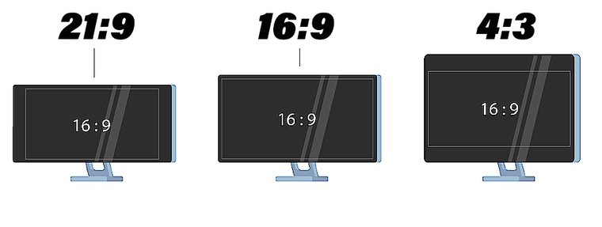

La resolución se refiere al número de píxeles que componen la imagen de una
pantalla. Un píxel es en un pequeño punto en la pantalla.
La resolución suele especificarse con el número de píxeles horizontales y verticales que componen la imagen,
por ejemplo, 1920 x 1080 píxeles. Eso significa que la pantalla tiene 1920 píxeles horizontales y 1080
píxeles verticales.
La relación de aspecto de un monitor es la representación proporcional que describe la correlación entre ancho y alto de la pantalla.
Las relaciones de aspecto más habituales son: 21:9, 16:9 y 4:3. Aún hay muchas más...
| Resolución en píxeles | Estándar | Relación aspecto | Tamaño de monitor medio |
|---|---|---|---|
| 1024 x 768 | XGA | 4:3 | monitores de 14 y 15" |
| 1280 x 720 | WXGA | 16:9 | monitores de 17 y 19" |
| 1280 x 800 | WXGA | 16:10 | monitores de 17 y 19" |
| 1280 x 1024 | WXGA | 4:3 | monitores de 17 y 19" |
| 1366 x 768 | HD | 16:9 | monitores de 19 y 21" |
| 1600 x 900 | HD+ | 16:9 | monitores de 19 y 21" |
| 1680 x 1050 | WSXGA+ | 16:10 | monitores de 19 y 21" |
| 1920 x 1080 | FHD | 16:9 | monitores de 21, 24 y hasta 27" |
| 1920 x 1200 | WUXGA | 16:10 | monitores de 22, 24 y hasta 26" |
| 2560 x 1080 | 21:9 | monitores de 25, 27 y 29" | |
| 2560 x 1440 | QHD | 16:9 | monitores de 24, 27 y 32" |
| 2560 x 1600 | 16:10 | monitores por encima de 26" | |
| 3440 x 1440 | WQHD | 21:9 | monitores de 34" en adelante |
| 3840 x 2160 | UHD o 4K UHD | 16:9 | monitores de 27, 32" y en adelante |
| 4096 x 2160 | 4K DCI | 19:10 | monitores de 27, 32" y en adelante |
| 5120 x 2160 | WUHD | 21:9 | monitores de 32" en adelante |
| 5120 x 2880 | 5K | 16:9 | monitores por encima de 40" |
| 7680 x 4320 | 8K | 16:9 | monitores por encima de 50" |